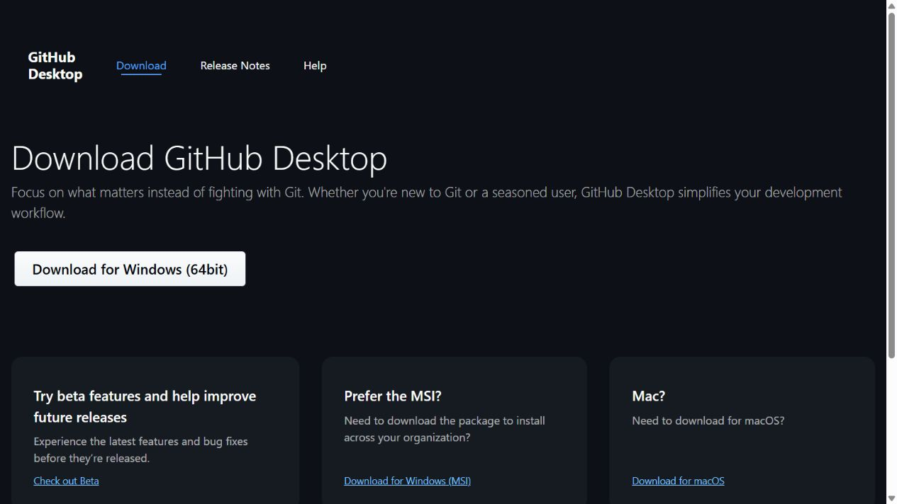
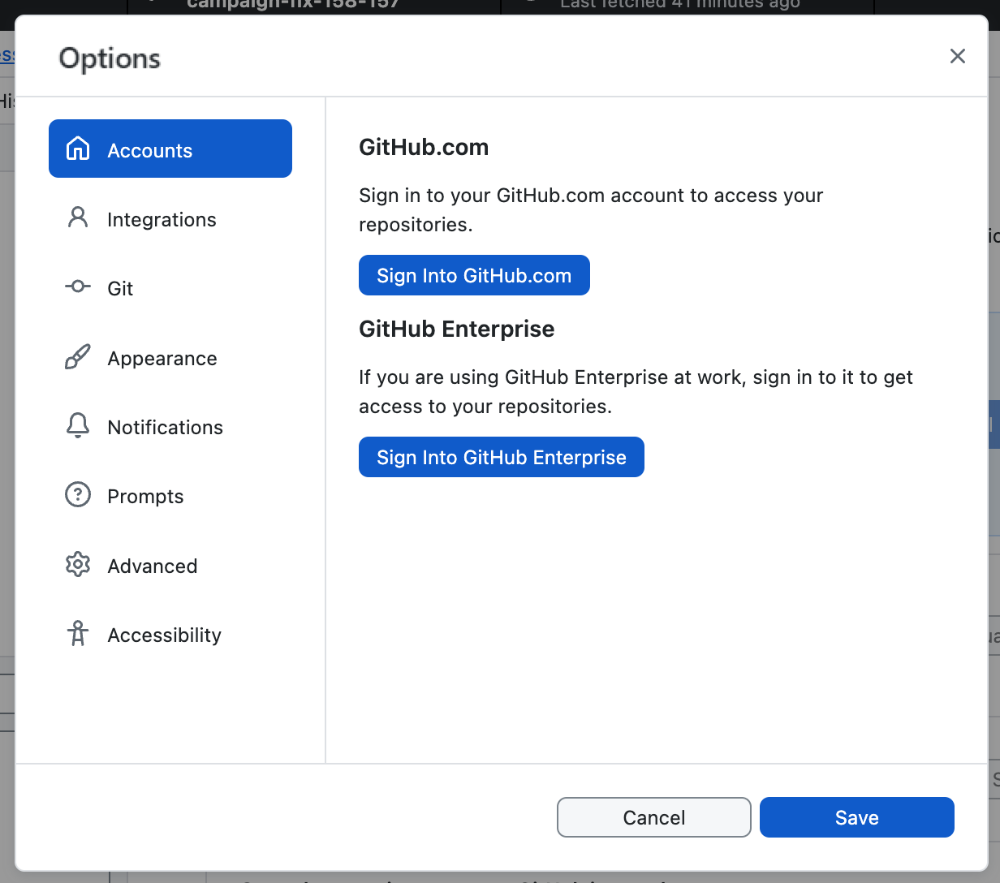
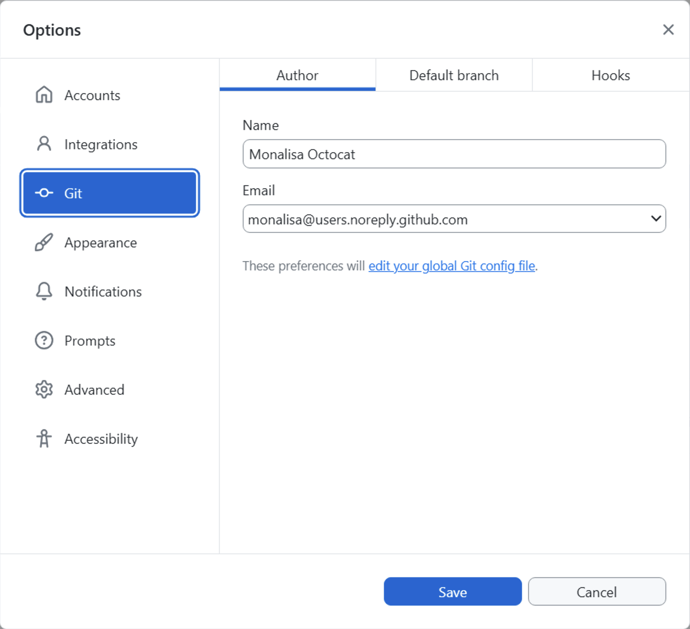
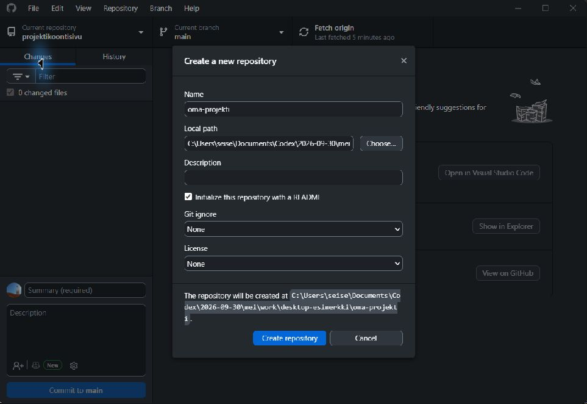
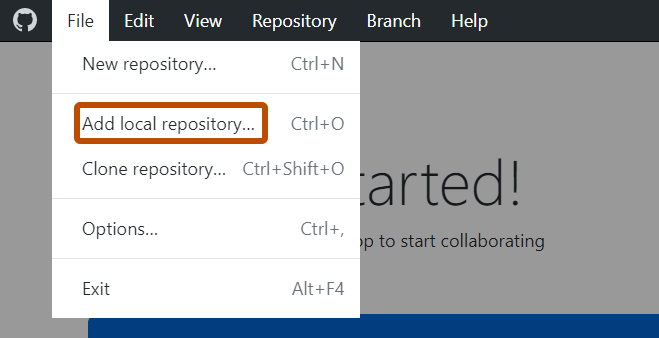
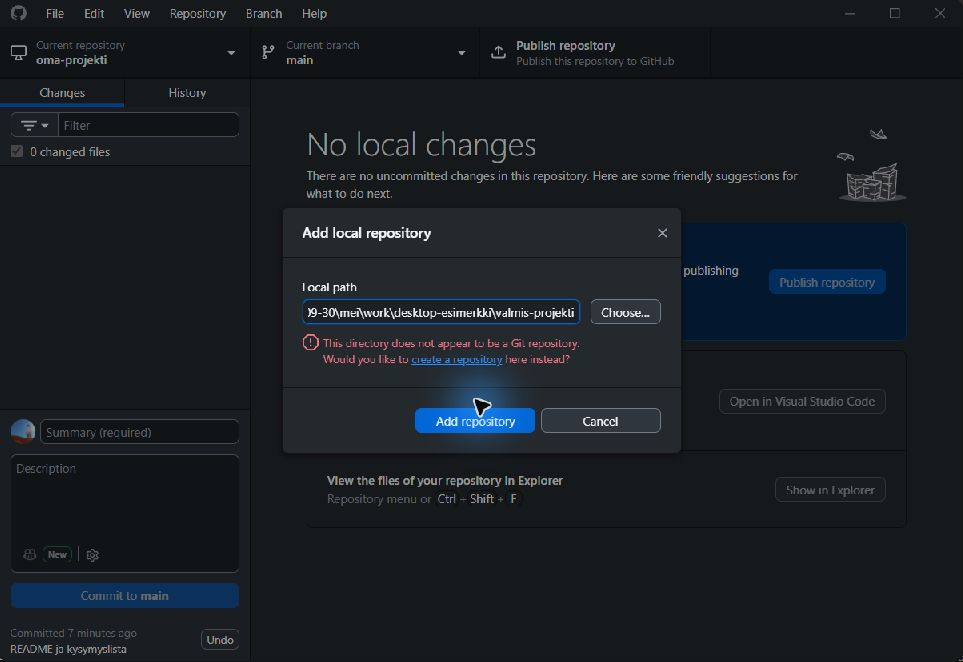
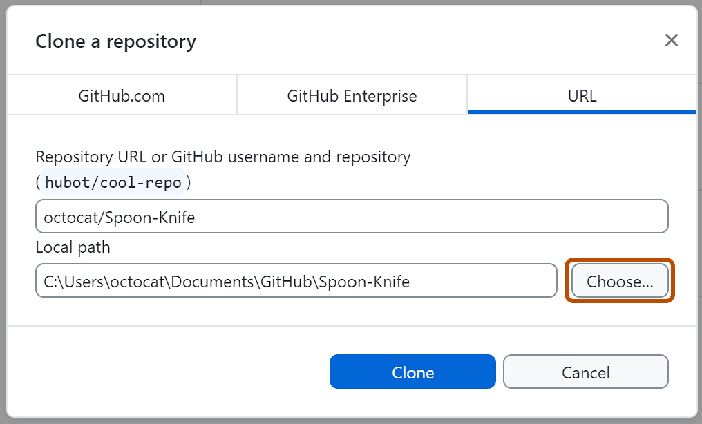
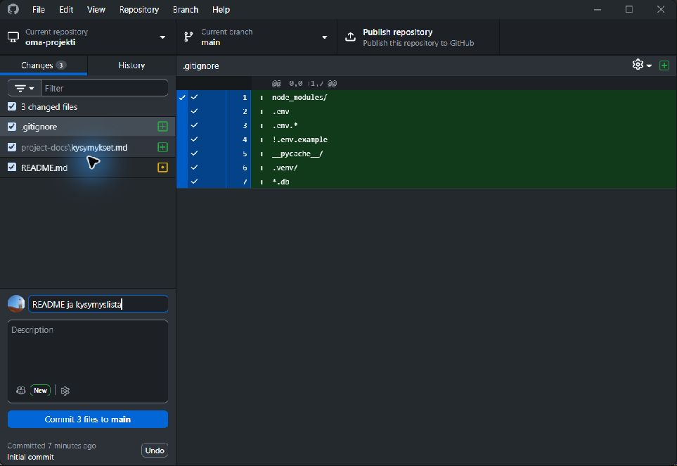
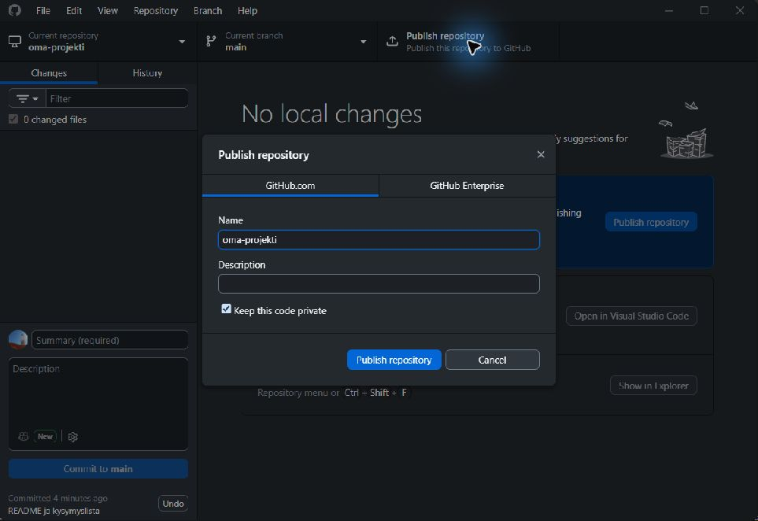
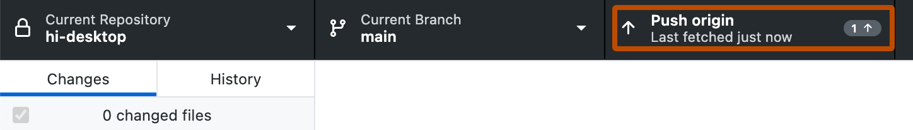

Tämä on koko työketju
- ProjektikansioTiedostot omalla koneellasi
- CommitNimetty tallennus muutoshistoriaan
- GitHubPublish ensimmäisellä kerralla, sitten Push
Commit tallentaa paikallisesti. Push lähettää tallennuksen GitHubiin. Pelkkä tallennus editorissa tai commit ei vielä vie tiedostoja verkkoon. Myöskään projektisivun rastit eivät siirrä tiedostoja repositoryyn.
Tällä ohjeella hoidat Gitin perustoiminnot ilman komentoriviä. Sovelluksen asentamiseen ja käynnistämiseen tarvittavat Node-, PHP- tai Python-komennot sekä Unityn työvaiheet teet edelleen oman projektisi ohjeesta.
1 · Tee kerran
Lataa ja asenna
- Avaa GitHub Desktopin virallinen lataussivu.
- Valitse Download for Windows (64bit). Windows-version vaatimus on Windows 10 tai uudempi, 64-bittinen.
- Avaa ladattu GitHubDesktopSetup.exe selaimen latauksista tai Resurssienhallinnan Lataukset-kansiosta. Asennuksen jälkeen sovellus avautuu.

Tarkempi ohje: GitHub Docs — asentaminen.
Oppilaitoksen koneella: jos asentaminen on estetty, pyydä ohjaajalta asennus tai koulun ohjelmistokeskuksen ohje.
2 · Tee kerran
Kirjaudu ja tarkista tekijätiedot
- Tarvitset oman GitHub-tilin. Sovi projektin tekijänimestä ja julkisuudesta ohjaajan kanssa oman projektin ohjeen mukaan.
- Valitse aloitusnäkymässä Sign in to GitHub.com. Jos sovellus on jo auki, sama toiminto löytyy kohdasta File → Options → Accounts.
- Valitse Continue with browser, kirjaudu selaimessa ja hyväksy GitHub Desktopin yhteys tiliisi. Palaa sovellukseen selaimen ehdottamalla tavalla.
- Avaa File → Options → Git. Tarkista Name ja Email. Käytä sovittua tekijänimeä ja tilisi noreply-osoitetta, jos et halua henkilökohtaisen sähköpostin näkyvän julkisissa commiteissa. Valitse Save.


Lähteet: kirjautuminen ja tekijätietojen asetukset.
Version työnäyte: GitHub Desktopin version löydät kohdasta Help → About GitHub Desktop. Desktop sisältää omaan käyttöönsä Gitin; erillinen git --version ei välttämättä toimi komentorivillä pelkän Desktop-asennuksen jälkeen. Tämän ohjeen Desktop-reitillä kirjaa Desktopin versionumero ja tarkistuspaikka työkalutaulukkoon tai päiväkirjaan.
3 · Valitse yksi reitti
Missä projektisi on nyt?
- A · Ei vielä projektikansiotaLuo uusi paikallinen repository.
- B · Tiedostot ovat jo omalla koneellaOta nykyinen kansio versionhallintaan.
- C · Oma repo on jo GitHubissaKloonaa se. Älä luo toista repositorya.
Oma työrepository on eri asia kuin projektin ohjesivusto. Käytä oman repositorysi osoitetta; tämän oppimateriaalin repository ei ole opiskelijan palautuskansio.
A · Luo uusi paikallinen repository
- Valitse File → New repository.
- Kirjoita Name-kenttään projektisi nimi, esimerkiksi
oma-projekti. - Valitse Local path: kansio, jonka alle projektikansio luodaan. Desktop lisää siihen Name-kentän nimen. Tarkista ikkunan alareunassa näkyvä lopullinen polku.
- Valitse Initialize this repository with a README. Voit jättää Git ignore- ja License-valinnat kohtaan None ja lisätä projektin oman
.gitignore-tiedoston seuraavaksi. Lisenssi sovitaan ohjaajan kanssa. - Valitse Create repository. Kansio on nyt omalla koneellasi. README:stä syntyy alkutallennus, Initial commit. Jatka tiedostojen lisäämiseen.

Lähde: GitHub Docs — ensimmäinen repository.
B · Lisää olemassa oleva projektikansio
- Valitse File → Add local repository → Choose.
- Valitse projektin juurikansio: se, jossa README, sovelluksen kansiot ja project-docs ovat. Älä valitse vain client-, frontend- tai project-docs-alikansiota.
- Valitse Add repository. Jos kansiossa on jo Git-versionhallinta, se lisätään Desktopiin.
- Jos näet ilmoituksen This directory does not appear to be a Git repository, valitse ilmoituksen create a repository -linkki. Tarkista, että lopullinen polku on juuri nykyinen projektikansio. Jos README on jo olemassa, jätä sen alustusruutu valitsematta. Valitse Create repository.


Nykyisiä tiedostoja ei tarvitse siirtää. Jatka niiden tarkistamiseen ja committiin.
Lisätietoa: paikallisen repositoryn lisääminen.
C · Kloonaa oma olemassa oleva GitHub-repository
- Kopioi selaimesta oman repositorysi osoite.
- Valitse File → Clone repository → URL. Liitä osoite Repository URL -kenttään.
- Valitse Local path: uusi, erillinen kohdekansio. Valitse Clone.

Kloonaus tuo myös historian ja GitHub-yhteyden. Sille ei tehdä uutta Publish repository -julkaisua. Tätä reittiä käytät myös, kun projektin ohje pyytää kokeilemaan käynnistystä toisesta kansiosta tai toisella koneella.
Lähde: GitHub Docs — kloonaaminen.
4 · Ennen jokaista committia
Laita tiedostot oikeaan kansioon
- Tarkista Desktopin vasemmasta yläkulmasta Current repository: valittuna on oma projektisi.
- Avaa Repository → Show in Explorer. Näet juuri sen kansion, jota Desktop seuraa.
- Tallenna koodit editorista tähän kansioon. Kopioi aiemmin kirjoitetut dokumentit ja kuvakaappaukset sen project-docs-alikansioon: valitse tiedostot Resurssienhallinnassa, paina Ctrl+C, avaa project-docs ja paina Ctrl+V. Älä vedä tiedostoja Desktopin ikkunaan.
- Lisää juureen
.gitignoreennen committia. Käytä oman projektin vaatimaa sisältöä. Tarkista tiedoston nimi: sen pitää olla.gitignore, ei.gitignore.txt.
oma-projekti/
├─ client/ sovelluksen käyttöliittymä
├─ server/ palvelimen koodi
├─ project-docs/
│ └─ kysymykset.md
├─ README.md
└─ .gitignoreoma-projekti/
├─ Assets/ scenet, skriptit ja tuotedata
├─ Packages/ Unityn pakettiluettelo
├─ ProjectSettings/ projektin asetukset
├─ project-docs/
│ └─ projektipaivakirja.md
├─ README.md
└─ .gitignore Unityn pohja: Library, Temp ja Builds jäävät poisGit ei tallenna tyhjiä kansioita. Jos kansion pitää näkyä jo ensimmäisessä commitissa, lisää siihen tarkoituksenmukainen README tai tyhjä .gitkeep-tiedosto. Kun sovelluksen oikeat tiedostot ovat kansiossa, ne pitävät sen mukana.
.gitignore-esimerkki näille projekteille
Yhteinen lähtökohta. Täydennä oman projektin ohjeella. .env.example saa sisältää vain tyhjät tai keksityt esimerkkiarvot.
node_modules/
.env
.env.*
!.env.example
*.db
*.db-shm
*.db-wal
__pycache__/
.venv/
venv/
client/dist/
frontend/dist/
vendor/.gitignore Unity-projektille
Helpoin tapa: valitse GitHubissa repositorya luodessasi Add .gitignore → Unity ja kloonaa repo reitillä C. Silloin tiedosto on valmiina. Pohjan tärkeimmät rivit ovat nämä:
/[Ll]ibrary/
/[Tt]emp/
/[Oo]bj/
/[Bb]uild/
/[Bb]uilds/
/[Ll]ogs/
/[Uu]ser[Ss]ettings/
*.csproj
*.slnUnity luo Library- ja Temp-kansiot uudelleen itse. Builds-kansion testiversiot eivät kuulu versionhallintaan.
Tarkista valittavat tiedostot: mukaan tulevat oma koodi, README ja työnäytteet. Salasanat, avaimet, oikeiden käyttäjien tiedot ja asennetut riippuvuuskansiot jäävät pois. Jos salaisuus ehti jo committiin, .gitignore ei poista sitä historiasta: pyydä ohjaajalta apua ennen lähettämistä.
5 · Nimetty tallennus omalla koneella
Tee commit
- Avaa Desktopin Changes-välilehti. Talletetut muutokset näkyvät listalla.
- Avaa listan tiedostot ja tarkista muutokset. Rastita tähän tallennukseen kuuluvat tiedostot. Ensimmäisellä kerralla mukana ovat ainakin README, .gitignore ja kysymyslista sekä valmiit sovellustiedostot.
- Kirjoita Summary-kenttään, mitä muutit, esimerkiksi README ja kysymyslista. Myöhemmin sopiva viesti on vaikkapa Korjaa kirjautumisen virheilmoitus #12. Description on vapaaehtoinen lisäselitys.
- Valitse Commit … files to main (painikkeessa näkyvä haara voi olla toinen). Tallennus näkyy History-välilehdellä.

Jatka vielä lähettämiseen. Changes-listan tyhjeneminen tarkoittaa, että valitut muutokset on commitoitu. Se ei yksin kerro, ovatko ne GitHubissa.
6 · Vain ensimmäinen lähetys uudelle repolle
Julkaise repository GitHubiin
Jos repo on uusi ja paikallinen, yläpalkissa on Publish repository. Jos kloonasit oman GitHub-repon, jatka suoraan Push origin -kohtaan.
- Käy oman projektin julkisuustarkistus läpi ohjaajan kanssa ennen julkaisemista. Tarkista myös commitin tekijätiedot ja tiedostojen sisältö.
- Valitse Publish repository. Tarkista nimi ja se, että repo tulee omalle tilillesi.
- Keep this code private tarkoittaa yksityistä repositorya. Jätä rasti, kunnes julkisuus on sovittu. Poista se vain, jos ohjaajan kanssa on sovittu julkisesta reposta. Jos projektin valmis kun -ehto edellyttää julkista repoa, asia ratkaistaan ohjaajan kanssa ennen valmistumisrastia.
- Valitse ikkunan Publish repository. Tämä luo GitHub-repon ja lähettää paikalliset commitit sinne.

Repositoryn julkaisu tallentaa koodin GitHubiin. Sovelluksen verkkojulkaisu tehdään erikseen oman projektin myöhemmässä työvaiheessa.
7 · Toista aina muutosten jälkeen
Lähetä muutokset ja tarkista GitHubista
- Tallenna tiedostot editorissa ja tee commit.
- Valitse yläpalkista Push origin. Odota lähetyksen valmistumista. Jos painike on Fetch origin eikä lähetettäviä committeja ole, tarkista silti seuraava kohta.
- Avaa Repository → View on GitHub. Tarkista selaimessa, että oikea repository ja haara ovat auki, uusin commit näkyy ja esimerkiksi project-docs/kysymykset.md sisältää juuri kirjoittamasi tekstin.
- Kirjaa oman reposi osoite ja commitin tunniste viikon päiväkirjaan. Lisää ohjaaja collaboratoriksi, jos projektisi sitä pyytää; katso GitHubin collaborator-ohje.

Päivittäinen muistisääntö: oikea repo → tallennetut tiedostot → Changes-tarkistus → kuvaava commit → Push origin → tarkistus GitHubista.
Jos työskentelet usealla koneella tai yhdessä muiden kanssa, valitse työn alussa Fetch origin ja tarvittaessa Pull origin. Pull hakee muiden lähettämät muutokset koneellesi. Jos syntyy ristiriita, pyydä ohjaajalta apua ennen jatkamista.
Lähde: GitHub Docs — Push.
Jos jokin ei toimi
- Tiedosto ei näy Changes-listalla
- Tallenna se editorissa. Tarkista Current repository ja Show in Explorer: onko tiedosto juuri tämän kansion sisällä? Tarkista myös .gitignore. Jos tiedosto ei ole muuttunut viime commitista, sen ei kuulukaan näkyä Changes-listalla.
- Commit-painike ei toimi
- Kirjoita Summary ja valitse vähintään yksi muuttunut tiedosto. Jos muutoksia ei ole, uutta committia ei tarvitse tehdä.
- Commit näkyy Historyssa, mutta tiedosto ei näy GitHubissa
- Valitse Publish repository uudelle paikalliselle repolle tai Push origin jo julkaistulle repolle. Tarkista selaimesta oikea repository ja sama haara.
- Desktop sanoo, että repository on jo olemassa
- Tarkista GitHubista, onko oma projektirepo jo luotu. Kloonaa olemassa oleva repo reitillä C. Jos nykyisen kansion muutokset pitää yhdistää siihen, pyydä ohjaajalta apua; älä poista tiedostoja tai historiaa.
- Lähetys pyytää ensin hakemaan muutoksia
- Valitse Fetch origin ja Pull origin. Tarkista muutokset. Ristiriidassa ota ohjaaja mukaan; älä yritä pakottaa lähetystä.
- GitHub torjuu suuren tiedoston
- GitHub estää yli 100 MiB:n tiedostot tavallisessa Git-lähetyksessä. Älä lisää node_modules-kansiota, Unityn Library-kansiota, asennuspaketteja tai suuria videoita repoosi. Jos tiedosto ehti jo committiin, pyydä ohjaajalta apua ennen uutta lähetysyritystä.
Ensimmäisen viikon lopputarkistus
- Oma repository avautuu GitHubissa ja sen julkisuus vastaa ohjaajan kanssa sovittua.
- README, .gitignore, kysymyslista ja tähän asti tehty koodi ovat mukana.
- Oma sisältöcommit näkyy historiassa; pelkkä automaattinen Initial commit ei kata myöhemmin lisäämiäsi tiedostoja.
- Salaisuudet ja riippuvuuskansiot jäävät pois.
- Repositoryn osoite ja commitin tunniste on kirjattu päiväkirjaan.
Palaa oman projektin viikko-ohjeeseen ja tee sen muut valmis kun -tarkistukset.
Palaa projektikoontiin